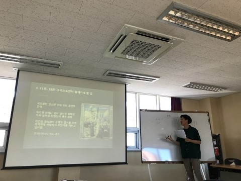
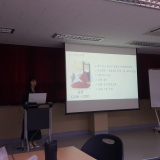

김민규(사회자)
여러분 오늘 동양철학 수업을 해주실 황미숙 교수님이십니다!

SWA7기
안녕하세요 교수님~
안녕하세요~ 바로 발표 시작하죠.
김민규(사회자)
네 먼저 삼국유사 발표를 맡은 이제명 학우의 발표를 들어보도록 하겠습니다.

이제명(발표자)
안녕하세요 삼국유사 발표를 맡은 이제명입니다.
삼국유사가 쓰였던 시기는
최충헌과 최우가 집권하던 무신 정권기에서 몽골과의 긴 전쟁 끝에 원나라의 간섭을
받게 되던 시기에 걸친 때로, 국내외 정세 변동이 급격했던 시기입니다.